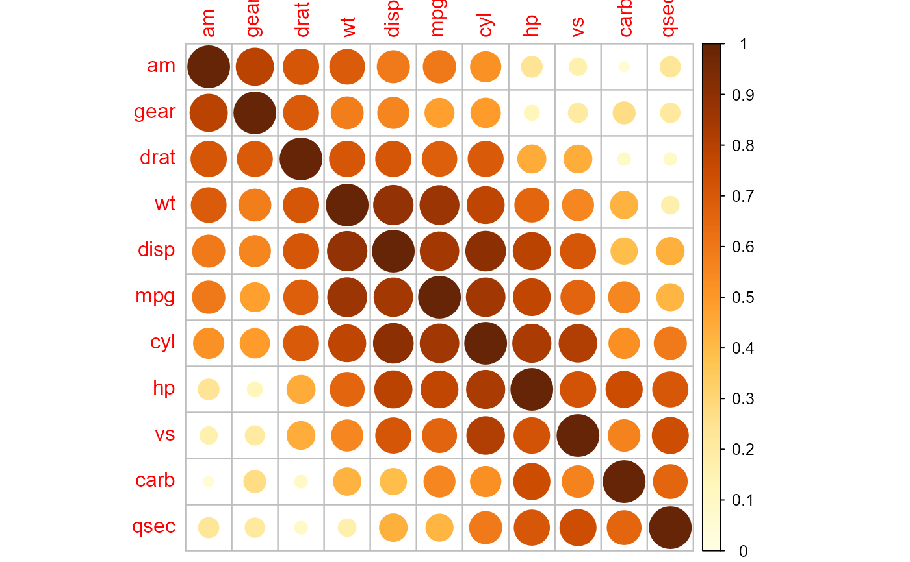
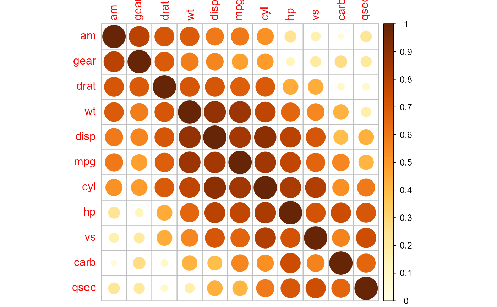

A graphical display of a correlation matrix, confidence interval. The details
are paid great attention to. It can also visualize a general matrix by
setting is.corr = FALSE.
Usage
corrplot(
corr,
method = c("circle", "square", "ellipse", "number", "shade", "color", "pie"),
type = c("full", "lower", "upper"),
col = NULL,
col.lim = NULL,
is.corr = TRUE,
bg = "white",
title = "",
add = FALSE,
diag = TRUE,
outline = FALSE,
mar = c(0, 0, 0, 0),
addgrid.col = NULL,
addCoef.col = NULL,
addCoefasPercent = FALSE,
order = c("original", "AOE", "FPC", "hclust", "alphabet"),
hclust.method = c("complete", "ward", "ward.D", "ward.D2", "single", "average",
"mcquitty", "median", "centroid"),
addrect = NULL,
rect.col = "black",
rect.lwd = 2,
tl.pos = NULL,
tl.cex = 1,
tl.col = "red",
tl.offset = 0.4,
tl.srt = 90,
cl.pos = NULL,
cl.length = NULL,
cl.cex = 0.8,
cl.ratio = 0.15,
cl.align.text = "c",
cl.offset = 0.5,
number.cex = 1,
number.font = 2,
number.digits = NULL,
addshade = c("negative", "positive", "all"),
shade.lwd = 1,
shade.col = "white",
transKeepSign = TRUE,
p.mat = NULL,
sig.level = 0.05,
insig = c("pch", "p-value", "blank", "n", "label_sig"),
pch = 4,
pch.col = "black",
pch.cex = 3,
plotCI = c("n", "square", "circle", "rect"),
lowCI.mat = NULL,
uppCI.mat = NULL,
na.label = "?",
na.label.col = "black",
win.asp = 1,
...
)Arguments
- corr
The correlation matrix to visualize, must be square if
orderis not'original'. For general matrix, please usingis.corr = FALSEto convert.- method
Character, the visualization method of correlation matrix to be used. Currently, it supports seven methods, named
'circle'(default),'square','ellipse','number','pie','shade'and'color'. See examples for details.The areas of circles or squares show the absolute value of corresponding correlation coefficients. Method
'pie'and'shade'came from Michael Friendly's job (with some adjustment about the shade added on), and'ellipse'came from D.J. Murdoch and E.D. Chow's job, see in section References.- type
Character,
'full'(default),'upper'or'lower', display full matrix, lower triangular or upper triangular matrix.- col
Vector, the colors of glyphs. They are distributed uniformly in
col.liminterval. Ifis.corrisTRUE, the default value will beCOL2('RdBu', 200). Ifis.corrisFALSEandcorris a non-negative or non-positive matrix, the default value will beCOL1('YlOrBr', 200); otherwise (elements are partly positive and partly negative), the default value will beCOL2('RdBu', 200).- col.lim
The limits
(x1, x2)interval for assigning color bycol. IfNULL,col.limwill bec(-1, 1)whenis.corrisTRUE,col.limwill bec(min(corr), max(corr))whenis.corrisFALSENOTICE: if you set
col.limwhenis.corrisTRUE, the assigning colors are still distributed uniformly in [-1, 1], it only affect the display on color-legend.- is.corr
Logical, whether the input matrix is a correlation matrix or not. We can visualize the non-correlation matrix by setting
is.corr = FALSE.- bg
The background color.
- title
Character, title of the graph.
- add
Logical, if
TRUE, the graph is added to an existing plot, otherwise a new plot will be created.- diag
Logical, whether display the correlation coefficients on the principal diagonal.
- outline
Logical or character, whether plot outline of circles, square and ellipse, or the color of these glyphs. For pie, this represents the color of the circle outlining the pie. If
outlineisTRUE, the default value is'black'.- mar
See
par.- addgrid.col
The color of the grid. If
NA, don't add grid. IfNULLthe default value is chosen. The default value depends onmethod, ifmethodiscolororshade, the color of the grid isNA, that is, not draw grid; otherwise'grey'.- addCoef.col
Color of coefficients added on the graph. If
NULL(default), add no coefficients.- addCoefasPercent
Logic, whether translate coefficients into percentage style for spacesaving.
- order
Character, the ordering method of the correlation matrix.
'original'for original order (default).'AOE'for the angular order of the eigenvectors.'FPC'for the first principal component order.'hclust'for the hierarchical clustering order.'alphabet'for alphabetical order.
See function
corrMatOrderfor details.- hclust.method
Character, the agglomeration method to be used when
orderishclust. This should be one of'ward','ward.D','ward.D2','single','complete','average','mcquitty','median'or'centroid'.- addrect
Integer, the number of rectangles draws on the graph according to the hierarchical cluster, only valid when
orderishclust. IfNULL(default), then add no rectangles.- rect.col
Color for rectangle border(s), only valid when
addrectis equal or greater than 1.- rect.lwd
Numeric, line width for borders for rectangle border(s), only valid when
addrectis equal or greater than 1.- tl.pos
Character or logical, position of text labels. If character, it must be one of
'lt','ld','td','d'or'n'.'lt'(default iftype=='full') means left and top,'ld'(default iftype=='lower') means left and diagonal,'td'(default iftype=='upper') means top and diagonal(near),'l'means left,'d'means diagonal,'n'means don't add text-label.- tl.cex
Numeric, for the size of text label (variable names).
- tl.col
The color of text label.
- tl.offset
Numeric, for text label, see
text.- tl.srt
Numeric, for text label string rotation in degrees, see
text.- cl.pos
Character or logical, position of color-legend; If character, it must be one of
'r'(default iftype=='upper'or'full'),'b'(default iftype=='lower') or'n','n'means don't draw color-legend.- cl.length
Integer, the number of number-text in color-legend, passed to
colorlegend. IfNULL,cl.lengthislength(col) + 1whenlength(col) <=20;cl.lengthis 11 whenlength(col) > 20- cl.cex
Numeric, cex of number-label in color-legend, passed to
colorlegend.- cl.ratio
Numeric, to justify the width of color-legend, 0.1~0.2 is suggested.
- cl.align.text
Character,
'l','c'(default) or'r', for number-label in color-legend,'l'means left,'c'means center, and'r'means right.- cl.offset
Numeric, for number-label in color-legend, see
text.- number.cex
The
cexparameter to send to the call totextwhen writing the correlation coefficients into the plot.- number.font
the
fontparameter to send to the call totextwhen writing the correlation coefficients into the plot.- number.digits
indicating the number of decimal digits to be added into the plot. Non-negative integer or NULL, default NULL.
- addshade
Character for shade style,
'negative','positive'or'all', only valid whenmethodis'shade'. If'all', all correlation coefficients' glyph will be shaded; if'positive', only the positive will be shaded; if'negative', only the negative will be shaded. Note: the angle of shade line is different, 45 degrees for positive and 135 degrees for negative.- shade.lwd
Numeric, the line width of shade.
- shade.col
The color of shade line.
- transKeepSign
Logical, whether or not to keep matrix values' sign when transforming non-corr matrix for plotting. Only valid when
is.corr = FALSE. The default value isTRUE.NOTE: If
FALSE,the non-corr matrix will be- p.mat
Matrix of p-value, if
NULL, parametersig.level,insig,pch,pch.col,pch.cexare invalid.- sig.level
Significant level, if the p-value in
p-matis bigger thansig.level, then the corresponding correlation coefficient is regarded as insignificant. Ifinsigis'label_sig', this may be an increasing vector of significance levels, in which casepchwill be used once for the highest p-value interval and multiple times (e.g. '*', '**', '***') for each lower p-value interval.- insig
Character, specialized insignificant correlation coefficients,
'pch'(default),'p-value','blank','n', or'label_sig'. If'blank', wipe away the corresponding glyphs; if'p-value', add p-values the corresponding glyphs; if'pch', add characters (seepchfor details) on corresponding glyphs; if'n', don't take any measures; if'label_sig', mark significant correlations with pch (seesig.level).- pch
Add character on the glyphs of insignificant correlation coefficients(only valid when
insigis'pch'). Seepar.- pch.col
The color of pch (only valid when
insigis'pch').- pch.cex
The cex of pch (only valid when
insigis'pch').- plotCI
Character, method of ploting confidence interval. If
'n', don't plot confidence interval. If 'rect', plot rectangles whose upper side means upper bound and lower side means lower bound, respectively. If 'circle', first plot a circle with the bigger absolute bound, and then plot the smaller. Warning: if the two bounds are the same sign, the smaller circle will be wiped away, thus forming a ring. Method 'square' is similar to 'circle'.- lowCI.mat
Matrix of the lower bound of confidence interval.
- uppCI.mat
Matrix of the upper bound of confidence interval.
- na.label
Label to be used for rendering
NAcells. Default is'?'. If 'square', then the cell is rendered as a square with thena.label.colcolor.- na.label.col
Color used for rendering
NAcells. Default is'black'.- win.asp
Aspect ration for the whole plot. Value other than 1 is currently compatible only with methods 'circle' and 'square'.
- ...
Additional arguments passing to function
textfor drawing text label.
Value
(Invisibly) returns a list(corr, corrTrans, arg).
corr is a reordered correlation matrix for plotting.
corrPos is a data frame with xName, yName, x, y, corr and
p.value(if p.mat is not NULL)
column, which x and y are the position on the correlation matrix plot.
arg is a list of some corrplot() input parameters' value.
Now type is in.
Details
corrplot function offers flexible ways to visualize
correlation matrix, lower and upper bound of confidence interval matrix.
Note
Cairo and cairoDevice packages is strongly recommended to
produce high-quality PNG, JPEG, TIFF bitmap files, especially for that
method circle, ellipse.
Row- and column names of the input matrix are used as labels rendered
in the corrplot. Plothmath expressions will be used if the name is prefixed
by one of the following characters: :, = or $.
For example ':alpha + beta'.
References
Michael Friendly (2002). Corrgrams: Exploratory displays for correlation matrices. The American Statistician, 56, 316--324.
D.J. Murdoch, E.D. Chow (1996). A graphical display of large correlation matrices. The American Statistician, 50, 178--180.
See also
Function plotcorr in the ellipse package and
corrgram in the corrgram package have some similarities.
Package seriation offered more methods to reorder matrices, such as
ARSA, BBURCG, BBWRCG, MDS, TSP, Chen and so forth.
Author
Taiyun Wei (weitaiyun@gmail.com)
Viliam Simko (viliam.simko@gmail.com)
Michael Levy (michael.levy@healthcatalyst.com)
Examples
data(mtcars)
M = cor(mtcars)
set.seed(0)
## different color series
## COL2: Get diverging colors
## c('RdBu', 'BrBG', 'PiYG', 'PRGn', 'PuOr', 'RdYlBu')
## COL1: Get sequential colors
## c('Oranges', 'Purples', 'Reds', 'Blues', 'Greens', 'Greys', 'OrRd', 'YlOrRd', 'YlOrBr', 'YlGn')
wb = c('white', 'black')
par(ask = TRUE)
## different color scale and methods to display corr-matrix
corrplot(M, method = 'number', col = 'black', cl.pos = 'n')
corrplot(M, method = 'number')
corrplot(M)
corrplot(M, order = 'AOE')
corrplot(M, order = 'AOE', addCoef.col = 'grey')
corrplot(M, order = 'AOE', cl.length = 21, addCoef.col = 'grey')
corrplot(M, order = 'AOE', col = COL2(n=10), addCoef.col = 'grey')
corrplot(M, order = 'AOE', col = COL2('PiYG'))
corrplot(M, order = 'AOE', col = COL2('PRGn'), addCoef.col = 'grey')
corrplot(M, order = 'AOE', col = COL2('PuOr', 20), cl.length = 21, addCoef.col = 'grey')
corrplot(M, order = 'AOE', col = COL2('PuOr', 10), addCoef.col = 'grey')
corrplot(M, order = 'AOE', col = COL2('RdYlBu', 100))
corrplot(M, order = 'AOE', col = COL2('RdYlBu', 10))
corrplot(M, method = 'color', col = COL2(n=20), cl.length = 21, order = 'AOE',
addCoef.col = 'grey')
corrplot(M, method = 'square', col = COL2(n=200), order = 'AOE')
corrplot(M, method = 'ellipse', col = COL2(n=200), order = 'AOE')
corrplot(M, method = 'shade', col = COL2(n=20), order = 'AOE')
corrplot(M, method = 'pie', order = 'AOE')
## col = wb
corrplot(M, col = wb, order = 'AOE', outline = TRUE, cl.pos = 'n')
## like Chinese wiqi, suit for either on screen or white-black print.
corrplot(M, col = wb, bg = 'gold2', order = 'AOE', cl.pos = 'n')
## mixed methods: It's more efficient if using function 'corrplot.mixed'
## circle + ellipse
corrplot(M, order = 'AOE', type = 'upper', tl.pos = 'd')
corrplot(M, add = TRUE, type = 'lower', method = 'ellipse', order = 'AOE',
diag = FALSE, tl.pos = 'n', cl.pos = 'n')
## circle + square
corrplot(M, order = 'AOE', type = 'upper', tl.pos = 'd')
corrplot(M, add = TRUE, type = 'lower', method = 'square', order = 'AOE',
diag = FALSE, tl.pos = 'n', cl.pos = 'n')
## circle + colorful number
corrplot(M, order = 'AOE', type = 'upper', tl.pos = 'd')
corrplot(M, add = TRUE, type = 'lower', method = 'number', order = 'AOE',
diag = FALSE, tl.pos = 'n', cl.pos = 'n')
## circle + black number
corrplot(M, order = 'AOE', type = 'upper', tl.pos = 'tp')
corrplot(M, add = TRUE, type = 'lower', method = 'number', order = 'AOE',
col = 'black', diag = FALSE, tl.pos = 'n', cl.pos = 'n')
## order is hclust and draw rectangles
corrplot(M, order = 'hclust')
corrplot(M, order = 'hclust', addrect = 2)
 corrplot(M, order = 'hclust', addrect = 3, rect.col = 'red')
corrplot(M, order = 'hclust', addrect = 4, rect.col = 'blue')
corrplot(M, order = 'hclust', addrect = 3, rect.col = 'red')
corrplot(M, order = 'hclust', addrect = 4, rect.col = 'blue')
 corrplot(M, order = 'hclust', hclust.method = 'ward.D2', addrect = 4)
## visualize a matrix in [0, 1]
corrplot(abs(M), order = 'AOE', col.lim = c(0, 1))
corrplot(abs(M), order = 'AOE', is.corr = FALSE, col.lim = c(0, 1))

# when is.corr=TRUE, col.lim only affect the color legend
# If you change it, the color is still assigned on [-1, 1]
corrplot(M/2)
corrplot(M/2, col.lim = c(-0.5, 0.5))
# when is.corr=FALSE, col.lim is also used to assign colors
# if the matrix have both positive and negative values
# the matrix transformation keep every values positive and negative
corrplot(M*2, is.corr = FALSE, col.lim = c(-2, 2))
corrplot(M*2, is.corr = FALSE, col.lim = c(-2, 2) * 2)
#> Warning: col.lim interval too wide, please set a suitable value
corrplot(M*2, is.corr = FALSE, col.lim = c(-2, 2) * 4)
#> Warning: col.lim interval too wide, please set a suitable value
## 0.5~0.6
corrplot(abs(M)/10+0.5, col = COL1('Greens', 10))
corrplot(abs(M)/10+0.5, is.corr = FALSE, col.lim = c(0.5, 0.6), col = COL1('YlGn', 10))
## visualize a matrix in [-100, 100]
ran = round(matrix(runif(225, -100, 100), 15))
corrplot(ran, is.corr = FALSE)
corrplot(ran, is.corr = FALSE, col.lim = c(-100, 100))
## visualize a matrix in [100, 300]
ran2 = ran + 200
# bad color, not suitable for a matrix in [100, 300]
corrplot(ran2, is.corr = FALSE, col.lim = c(100, 300), col = COL2(, 100))
# good color
corrplot(ran2, is.corr = FALSE, col.lim = c(100, 300), col = COL1(, 100))
## text-labels and plot type
corrplot(M, order = 'AOE', tl.srt = 45)
corrplot(M, order = 'AOE', tl.srt = 60)
corrplot(M, order = 'AOE', tl.pos = 'd', cl.pos = 'n')
corrplot(M, order = 'AOE', diag = FALSE, tl.pos = 'd')
corrplot(M, order = 'AOE', type = 'upper')
corrplot(M, order = 'AOE', type = 'upper', diag = FALSE)
corrplot(M, order = 'AOE', type = 'lower', cl.pos = 'b')
corrplot(M, order = 'AOE', type = 'lower', cl.pos = 'b', diag = FALSE)
#### color-legend
corrplot(M, order = 'AOE', cl.ratio = 0.2, cl.align = 'l')
corrplot(M, order = 'AOE', cl.ratio = 0.2, cl.align = 'c')
corrplot(M, order = 'AOE', cl.ratio = 0.2, cl.align = 'r')
corrplot(M, order = 'AOE', cl.pos = 'b')
corrplot(M, order = 'AOE', cl.pos = 'b', tl.pos = 'd')
corrplot(M, order = 'AOE', cl.pos = 'n')
## deal with missing Values
M2 = M
diag(M2) = NA
corrplot(M2)
corrplot(M2, na.label = 'o')
corrplot(M2, na.label = 'NA')
##the input matrix is not square
corrplot(M[1:8, ])
corrplot(M[, 1:8])
testRes = cor.mtest(mtcars, conf.level = 0.95)
## specialized the insignificant value according to the significant level
corrplot(M, p.mat = testRes$p, sig.level = 0.05, order = 'hclust', addrect = 2)
## leave blank on no significant coefficient
corrplot(M, p.mat = testRes$p, method = 'circle', type = 'lower', insig ='blank',
addCoef.col ='black', number.cex = 0.8, order = 'AOE', diag = FALSE)
## add p-values on no significant coefficients
corrplot(M, p.mat = testRes$p, insig = 'p-value')
## add all p-values
corrplot(M, p.mat = testRes$p, insig = 'p-value', sig.level = -1)
## add significant level stars
corrplot(M, p.mat = testRes$p, method = 'color', diag = FALSE, type = 'upper',
sig.level = c(0.001, 0.01, 0.05), pch.cex = 0.9,
insig = 'label_sig', pch.col = 'grey20', order = 'AOE')
corrplot(M, order = 'hclust', hclust.method = 'ward.D2', addrect = 4)
## visualize a matrix in [0, 1]
corrplot(abs(M), order = 'AOE', col.lim = c(0, 1))
corrplot(abs(M), order = 'AOE', is.corr = FALSE, col.lim = c(0, 1))

# when is.corr=TRUE, col.lim only affect the color legend
# If you change it, the color is still assigned on [-1, 1]
corrplot(M/2)
corrplot(M/2, col.lim = c(-0.5, 0.5))
# when is.corr=FALSE, col.lim is also used to assign colors
# if the matrix have both positive and negative values
# the matrix transformation keep every values positive and negative
corrplot(M*2, is.corr = FALSE, col.lim = c(-2, 2))
corrplot(M*2, is.corr = FALSE, col.lim = c(-2, 2) * 2)
#> Warning: col.lim interval too wide, please set a suitable value
corrplot(M*2, is.corr = FALSE, col.lim = c(-2, 2) * 4)
#> Warning: col.lim interval too wide, please set a suitable value
## 0.5~0.6
corrplot(abs(M)/10+0.5, col = COL1('Greens', 10))
corrplot(abs(M)/10+0.5, is.corr = FALSE, col.lim = c(0.5, 0.6), col = COL1('YlGn', 10))
## visualize a matrix in [-100, 100]
ran = round(matrix(runif(225, -100, 100), 15))
corrplot(ran, is.corr = FALSE)
corrplot(ran, is.corr = FALSE, col.lim = c(-100, 100))
## visualize a matrix in [100, 300]
ran2 = ran + 200
# bad color, not suitable for a matrix in [100, 300]
corrplot(ran2, is.corr = FALSE, col.lim = c(100, 300), col = COL2(, 100))
# good color
corrplot(ran2, is.corr = FALSE, col.lim = c(100, 300), col = COL1(, 100))
## text-labels and plot type
corrplot(M, order = 'AOE', tl.srt = 45)
corrplot(M, order = 'AOE', tl.srt = 60)
corrplot(M, order = 'AOE', tl.pos = 'd', cl.pos = 'n')
corrplot(M, order = 'AOE', diag = FALSE, tl.pos = 'd')
corrplot(M, order = 'AOE', type = 'upper')
corrplot(M, order = 'AOE', type = 'upper', diag = FALSE)
corrplot(M, order = 'AOE', type = 'lower', cl.pos = 'b')
corrplot(M, order = 'AOE', type = 'lower', cl.pos = 'b', diag = FALSE)
#### color-legend
corrplot(M, order = 'AOE', cl.ratio = 0.2, cl.align = 'l')
corrplot(M, order = 'AOE', cl.ratio = 0.2, cl.align = 'c')
corrplot(M, order = 'AOE', cl.ratio = 0.2, cl.align = 'r')
corrplot(M, order = 'AOE', cl.pos = 'b')
corrplot(M, order = 'AOE', cl.pos = 'b', tl.pos = 'd')
corrplot(M, order = 'AOE', cl.pos = 'n')
## deal with missing Values
M2 = M
diag(M2) = NA
corrplot(M2)
corrplot(M2, na.label = 'o')
corrplot(M2, na.label = 'NA')
##the input matrix is not square
corrplot(M[1:8, ])
corrplot(M[, 1:8])
testRes = cor.mtest(mtcars, conf.level = 0.95)
## specialized the insignificant value according to the significant level
corrplot(M, p.mat = testRes$p, sig.level = 0.05, order = 'hclust', addrect = 2)
## leave blank on no significant coefficient
corrplot(M, p.mat = testRes$p, method = 'circle', type = 'lower', insig ='blank',
addCoef.col ='black', number.cex = 0.8, order = 'AOE', diag = FALSE)
## add p-values on no significant coefficients
corrplot(M, p.mat = testRes$p, insig = 'p-value')
## add all p-values
corrplot(M, p.mat = testRes$p, insig = 'p-value', sig.level = -1)
## add significant level stars
corrplot(M, p.mat = testRes$p, method = 'color', diag = FALSE, type = 'upper',
sig.level = c(0.001, 0.01, 0.05), pch.cex = 0.9,
insig = 'label_sig', pch.col = 'grey20', order = 'AOE')
 ## add significant level stars and cluster rectangles
corrplot(M, p.mat = testRes$p, tl.pos = 'd', order = 'hclust', addrect = 2,
insig = 'label_sig', sig.level = c(0.001, 0.01, 0.05),
pch.cex = 0.9, pch.col = 'grey20')
# Visualize confidence interval
corrplot(M, lowCI = testRes$lowCI, uppCI = testRes$uppCI, order = 'hclust',
tl.pos = 'd', rect.col = 'navy', plotC = 'rect', cl.pos = 'n')
# Visualize confidence interval and cross the significant coefficients
corrplot(M, p.mat = testRes$p, lowCI = testRes$lowCI, uppCI = testRes$uppCI,
addrect = 3, rect.col = 'navy', plotC = 'rect', cl.pos = 'n')
res1 = cor.mtest(mtcars, conf.level = 0.95)
res2 = cor.mtest(mtcars, conf.level = 0.99)
## plot confidence interval(0.95), 'circle' method
corrplot(M, low = res1$uppCI, upp = res1$uppCI,
plotCI = 'circle', addg = 'grey20', cl.pos = 'n')
corrplot(M, p.mat = res1$p, low = res1$lowCI, upp = res1$uppCI,
plotCI = 'circle', addg = 'grey20', cl.pos = 'n')
corrplot(M, low = res1$lowCI, upp = res1$uppCI,
col = c('white', 'black'), bg = 'gold2', order = 'AOE',
plotCI = 'circle', cl.pos = 'n', pch.col = 'red')
corrplot(M, p.mat = res1$p, low = res1$lowCI, upp = res1$uppCI,
col = c('white', 'black'), bg = 'gold2', order = 'AOE',
plotCI = 'circle', cl.pos = 'n', pch.col = 'red')
## plot confidence interval(0.95), 'square' method
corrplot(M, low = res1$lowCI, upp = res1$uppCI,
col = c('white', 'black'), bg = 'gold2', order = 'AOE',
plotCI = 'square', addg = NULL, cl.pos = 'n')
corrplot(M, p.mat = res1$p, low = res1$lowCI, upp = res1$uppCI,
col = c('white', 'black'), bg = 'gold2', order = 'AOE', pch.col = 'red',
plotCI = 'square', addg = NULL, cl.pos = 'n')
## plot confidence interval0.95, 0.95, 0.99, 'rect' method
corrplot(M, low = res1$lowCI, upp = res1$uppCI, order = 'hclust',
rect.col = 'navy', plotCI = 'rect', cl.pos = 'n')
corrplot(M, p.mat = res1$p, low = res1$lowCI, upp = res1$uppCI,
order = 'hclust', pch.col = 'red', sig.level = 0.05, addrect = 3,
rect.col = 'navy', plotCI = 'rect', cl.pos = 'n')
corrplot(M, p.mat = res2$p, low = res2$lowCI, upp = res2$uppCI,
order = 'hclust', pch.col = 'red', sig.level = 0.01, addrect = 3,
rect.col = 'navy', plotCI = 'rect', cl.pos = 'n')
## an animation of changing confidence interval in different significance level
## begin.animaton
par(ask = FALSE)
for (i in seq(0.1, 0, -0.005)) {
tmp = cor.mtest(mtcars, conf.level = 1 - i)
corrplot(M, p.mat = tmp$p, low = tmp$lowCI, upp = tmp$uppCI, order = 'hclust',
pch.col = 'red', sig.level = i, plotCI = 'rect', cl.pos = 'n',
mar = c(0, 0, 1, 0),
title = substitute(alpha == x,
list(x = format(i, digits = 3, nsmall = 3))))
Sys.sleep(0.15)
}
## end.animaton
## add significant level stars and cluster rectangles
corrplot(M, p.mat = testRes$p, tl.pos = 'd', order = 'hclust', addrect = 2,
insig = 'label_sig', sig.level = c(0.001, 0.01, 0.05),
pch.cex = 0.9, pch.col = 'grey20')
# Visualize confidence interval
corrplot(M, lowCI = testRes$lowCI, uppCI = testRes$uppCI, order = 'hclust',
tl.pos = 'd', rect.col = 'navy', plotC = 'rect', cl.pos = 'n')
# Visualize confidence interval and cross the significant coefficients
corrplot(M, p.mat = testRes$p, lowCI = testRes$lowCI, uppCI = testRes$uppCI,
addrect = 3, rect.col = 'navy', plotC = 'rect', cl.pos = 'n')
res1 = cor.mtest(mtcars, conf.level = 0.95)
res2 = cor.mtest(mtcars, conf.level = 0.99)
## plot confidence interval(0.95), 'circle' method
corrplot(M, low = res1$uppCI, upp = res1$uppCI,
plotCI = 'circle', addg = 'grey20', cl.pos = 'n')
corrplot(M, p.mat = res1$p, low = res1$lowCI, upp = res1$uppCI,
plotCI = 'circle', addg = 'grey20', cl.pos = 'n')
corrplot(M, low = res1$lowCI, upp = res1$uppCI,
col = c('white', 'black'), bg = 'gold2', order = 'AOE',
plotCI = 'circle', cl.pos = 'n', pch.col = 'red')
corrplot(M, p.mat = res1$p, low = res1$lowCI, upp = res1$uppCI,
col = c('white', 'black'), bg = 'gold2', order = 'AOE',
plotCI = 'circle', cl.pos = 'n', pch.col = 'red')
## plot confidence interval(0.95), 'square' method
corrplot(M, low = res1$lowCI, upp = res1$uppCI,
col = c('white', 'black'), bg = 'gold2', order = 'AOE',
plotCI = 'square', addg = NULL, cl.pos = 'n')
corrplot(M, p.mat = res1$p, low = res1$lowCI, upp = res1$uppCI,
col = c('white', 'black'), bg = 'gold2', order = 'AOE', pch.col = 'red',
plotCI = 'square', addg = NULL, cl.pos = 'n')
## plot confidence interval0.95, 0.95, 0.99, 'rect' method
corrplot(M, low = res1$lowCI, upp = res1$uppCI, order = 'hclust',
rect.col = 'navy', plotCI = 'rect', cl.pos = 'n')
corrplot(M, p.mat = res1$p, low = res1$lowCI, upp = res1$uppCI,
order = 'hclust', pch.col = 'red', sig.level = 0.05, addrect = 3,
rect.col = 'navy', plotCI = 'rect', cl.pos = 'n')
corrplot(M, p.mat = res2$p, low = res2$lowCI, upp = res2$uppCI,
order = 'hclust', pch.col = 'red', sig.level = 0.01, addrect = 3,
rect.col = 'navy', plotCI = 'rect', cl.pos = 'n')
## an animation of changing confidence interval in different significance level
## begin.animaton
par(ask = FALSE)
for (i in seq(0.1, 0, -0.005)) {
tmp = cor.mtest(mtcars, conf.level = 1 - i)
corrplot(M, p.mat = tmp$p, low = tmp$lowCI, upp = tmp$uppCI, order = 'hclust',
pch.col = 'red', sig.level = i, plotCI = 'rect', cl.pos = 'n',
mar = c(0, 0, 1, 0),
title = substitute(alpha == x,
list(x = format(i, digits = 3, nsmall = 3))))
Sys.sleep(0.15)
}
## end.animaton